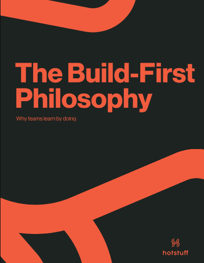
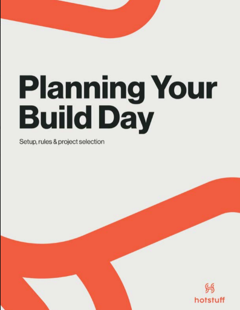
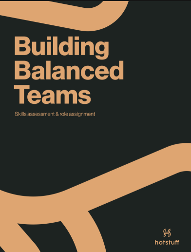
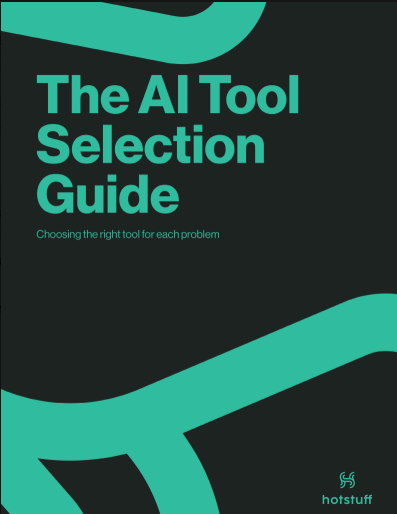
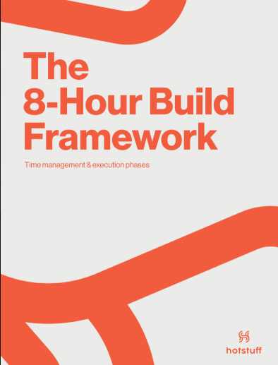
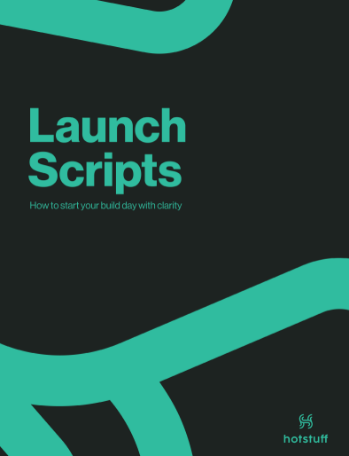
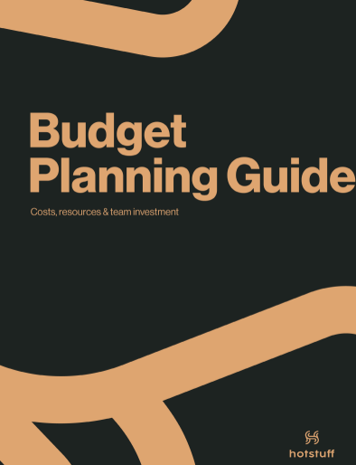
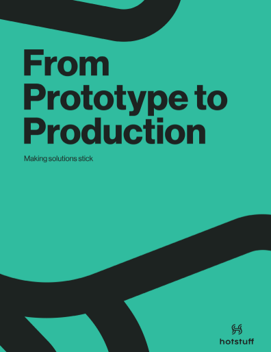

You want to run an AI adoption day, but you don't have the system to structure it? Now you do
A practical system with everything you need to plan, facilitate, and follow up on a full-day AI workshop. One intensive day → real workflows, real adoption.
Built from 15 years of working with global brands.
One-time payment · Instant digital access · Ideal for teams that want to adopt AI with structure.
You want to run an AI adoption day, but you don't have the system to structure it.
There's interest, tools, and pressure to move. What's usually missing is a clear path to turn that energy into prototypes, workflows, and measurable decisions.
You don't know how far along your team is
There's interest, but no clarity on the real level of maturity.
Everyone uses tools on their own
Without a shared path, adoption becomes chaotic.
There's too much free information
Courses and newsletters help, but they don't translate into operations.
There's no clear first step
The team needs structure before rushing to another tool.
8 documents to prepare, facilitate, and follow up on the Build Up Day.
Diagnosis, tool selection, an 8-hour framework, scripts, a calculator, and a post-event guide. Less improvisation; more signal, less keynote smoke.








Explains the logic of the system and why one intensive day can turn AI interest into real prototypes.
A guide to define objectives, agenda, participants, format, and prep work.
A questionnaire to identify skills, roles, and balanced teams.
Helps choose tools based on objectives, profiles, and use cases.
A complete step-by-step to run the day, phase by phase.
Scripts to open the event, explain the format, and facilitate final demos.
Estimate costs, justify investment, and measure ROI after the event.
Prioritize prototypes, assign ownership, and turn what you built into workflows.
This system is for you if…
A quick filter to avoid false expectations.
Start with an accessible investment.
The final price is being validated, with a planned range of USD $149 — Launching price
One-time payment · Buy online · No mandatory call.
15 years working with global brands, distilled into a system for your team.
Turning AI into Work isn't theory. It's a distillation of processes, workshops, measurement, and execution applied to AI adoption in real teams.
We partnered with Hotstuff for strategy alignment of products that needed to be more attractive for our local consumer. Their workshop gave us a clear strategy that helped us gain more relevance in the e-commerce channels.
Spirits Brand Grouper, LVMH.Hotstuff understood wonderfully the essence of the brand, helping us with a workshop to localize the global communication for a foreign market. They are a passionate and really committed team.
Marketing Manager Sr. · Hachette LivreAfter working with Hotstuff our brand started being perceived as the premium option in the market. The feedback we have received from our clients is extremely positive.
GoBEEF, OwnerBefore you buy.
No. It's an execution system to organize and facilitate a Build Up Day. It includes no classes or modules; it includes operational guides for before, during, and after.
No. It's designed for managers and leaders. The technical profile can come from your own team, and the diagnostic helps identify it.
The Build Up Day lasts 8 hours. Prep usually takes between 2 and 4 weeks.
Yes, as long as the team uses AI or is willing to start. The projects come from the team's real pain points.